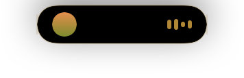
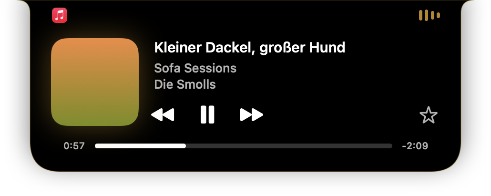
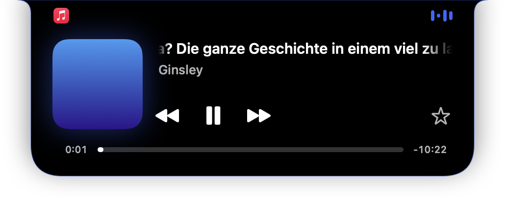

Jede Quelle
Apple Music, Spotify, Podcasts, YouTube in Safari oder Chrome: Was dein Mac unter „Läuft gerade“ kennt, zeigt Smoll Notch an. Mit Cover, Titel und Fortschritt.
Smoll Notch macht aus der Notch deines MacBook eine kleine Dynamic Island, die zeigt, was gerade läuft. Egal ob Apple Music, Spotify oder YouTube im Browser.
Fahr mit der Maus über die Notch.Tipp auf die Notch.
Funktionen
Zugeklappt sitzt sie unauffällig neben der Kamera. Fährst du drüber, wird sie zum Player.
Apple Music, Spotify, Podcasts, YouTube in Safari oder Chrome: Was dein Mac unter „Läuft gerade“ kennt, zeigt Smoll Notch an. Mit Cover, Titel und Fortschritt.
Der kleine Equalizer übernimmt die Farbe des aktuellen Covers. Immer so hell, dass er auf Schwarz gut lesbar bleibt.
Mit zwei Fingern auf dem Trackpad nach links oder rechts wischen, und der nächste Titel läuft.
Beginnt ein neuer Song, klappt die Insel für einen Moment auf, wie auf dem iPhone.
Markiere den laufenden Song in Apple Music direkt aus der Notch als Favorit.
Auf Bildschirmen ohne Notch schwebt die Insel als Pille oben in der Mitte. Wahlweise auf allen Bildschirmen.



Datenschutz
Kein Konto, kein Server, kein Tracking, keine Werbung. Smoll Notch liest nur, was macOS ohnehin unter „Läuft gerade“ anzeigt, und zeigt es dir an. Datenschutzerklärung lesen
Installieren
Lade die DMG herunter und öffne sie mit einem Doppelklick.
Zieh Smoll Notch in den Ordner „Programme“.
Öffne die App. Sie lebt in der Notch und in der Menüleiste, ganz ohne Dock-Symbol.
Fragen
Um „Läuft gerade“ von allen Apps zu lesen, braucht Smoll Notch eine Systemschnittstelle, die Apple im Mac App Store nicht erlaubt. Deshalb gibt es die App direkt hier. Sie ist mit einer Developer ID signiert und von Apple auf Schadsoftware geprüft (notarisiert), daher öffnet sie sich ohne Warnung.
Ja. Alles, was macOS im Kontrollzentrum unter „Läuft gerade“ zeigt, erscheint auch in der Notch: Apple Music, Spotify, Podcasts, YouTube in Safari oder Chrome und mehr. Das Favorisieren gibt es nur für Apple Music.
Ja. Ohne Notch schwebt die Insel als kleine Pille oben in der Mitte des Bildschirms. In den Einstellungen wählst du, ob sie auf dem Bildschirm mit Notch, dem Hauptbildschirm oder auf allen erscheint.
Nein. Smoll Notch ist kostenlos und ohne Werbung.
Beende sie über das Symbol in der Menüleiste und zieh sie aus „Programme“ in den Papierkorb. Wenn du „Beim Anmelden starten“ eingeschaltet hattest, entfernt macOS den Eintrag automatisch.